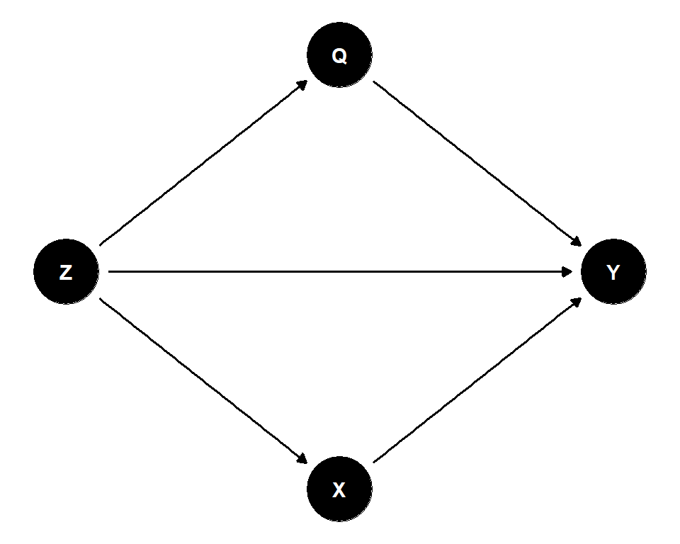
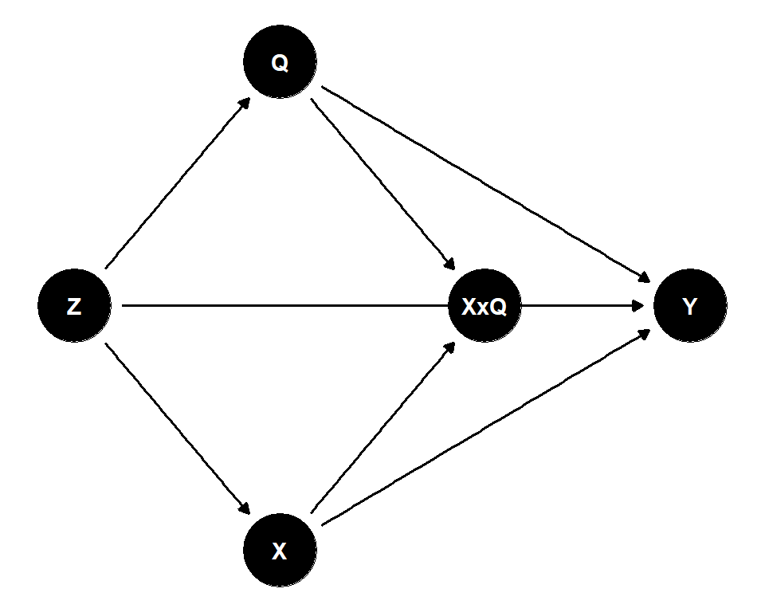
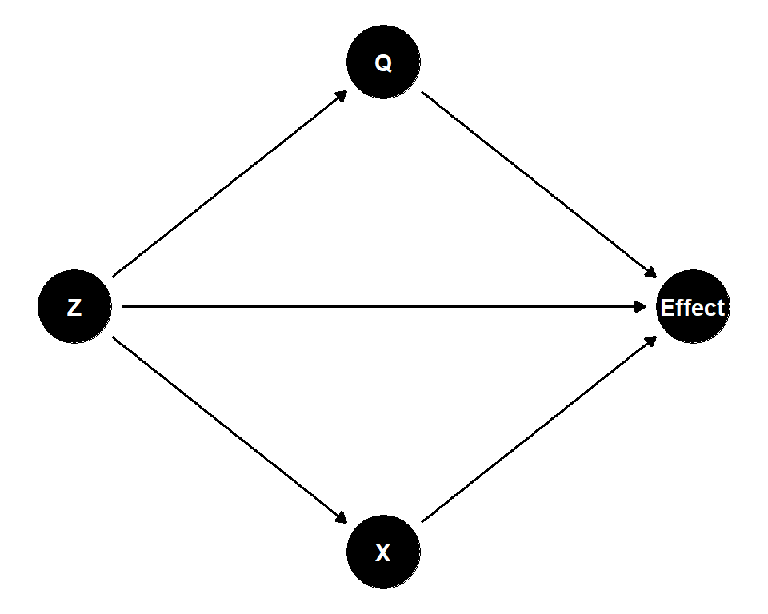

警告Work-in-progress 🚧
You are reading the work-in-progress first edition of Causal Inference in R. This chapter is actively undergoing work and may be restructured or changed. It may also be incomplete.
Heterogeneous treatment effects · 原书逐章中译
来源：Malcolm Barrett、Lucy D’Agostino McGowan、Travis Gerke，Causal Inference in R · Heterogeneous treatment effects。 本页为中文翻译；原书代码块、公式、图表交叉引用和引用键均按原文保留。统计图在网页渲染时由 R 代码生成，静态插图直接引用原文件。 原书仓库采用 CC BY-NC-SA 4.0；代码采用 MIT 许可。请遵守原许可证并注明作者。
You are reading the work-in-progress first edition of Causal Inference in R. This chapter is actively undergoing work and may be restructured or changed. It may also be incomplete.
正如 因果估计目标 中所述，ATE、ATT 和 ATC 等因果估计目标，都是对同一个单位层面差异 \((Y(1)-Y(0))\) 在不同协变量分布下取的期望。 只有当个体处理效应在不同单位之间变化时，这一区别才有意义。
请注意，这里用粗体表示 \(\mathbf{Z}\)。 这是为了说明它代表多个协变量（实际应用中是所有混杂因子），而不是单个变量。
正如 潜在结局 中所定义的，\(Y(1)\) 和 \(Y(0)\) 分别表示暴露 \((X=1)\) 和对照 \((X=0)\) 下的潜在结局。 \(\mathbf{Z}\) 是一组处理前协变量组成的向量。 个体处理效应可以写成
\[ \tau(Z)=Y(1)-Y(0). \]
当 \(\tau(Z)\) 不随 \(Z\) 取值而保持恒定时，就会出现异质性处理效应。 此时，因果估计目标 中定义的各种估计目标，例如
\[ \text{ATE}=E[\tau(Z)], \quad \text{ATT}=E[\tau(Z)\mid X=1], \quad \text{ATC}=E[\tau(Z)\mid X=0]. \]
上述量是对同一个函数 \(\tau(Z)\) 取的不同平均值。 它们之间的任何差异都由两点驱动：1. 处理效应在不同协变量特征组合之间存在变化；2. 处理组和未处理组之间这些协变量特征组合的分布不同。
假设我们拟合一个简单回归模型，以理解暴露与结局之间的关系。 也就是说，我们将观测结局 \(Y\) 的条件均值建模为处理 \(X\) 和混杂因子 \(\mathbf{Z}\) 的函数。
\[ E[Y\mid X,Z]=\beta_0+\beta_1X+\boldsymbol\beta^\top \textbf{Z} \] 在这一设定下，
\[ E[Y\mid X=1,\mathbf{Z}]-E[Y\mid X=0,\mathbf{Z}]=\beta_1. \]
这意味着我们假设每个单位的处理效应都相同，而不受协变量取值影响。 换句话说，在对 \(\mathbf{Z}\) 进行调整后，模型假设处理效应不会在总体中变化。
这可能是一个很强的假设。 在许多场景中，不同亚组的处理效应可能不同。 为了允许这种可能性，假设混杂因子集合 \(\mathbf{Z}\) 中的一个变量会修饰处理效应（称其为 \(Z_1\)）。 我们可以加入处理与该协变量之间的交互作用：
\[ E[Y \mid X,\mathbf{Z}] = \beta_0 + \beta_1 X + \beta_2 Z_1 + \beta_3(X \times Z_1) + \boldsymbol{\beta}_4^{\top}\mathbf{W}, \]
其中，\(\mathbf{W}\) 包含 \(\mathbf{Z}\) 中除 \(Z_1\) 以外的其余协变量。 此时条件处理效应变为
\[ \tau(Z_1)= E[Y \mid X=1,\mathbf{Z}] - E[Y \mid X=0,\mathbf{Z}] =\beta_1 + \beta_3 Z_1. \]
现在，处理效应取决于 \(Z_1\)。 如果 \(\beta_3=0\)，处理效应就是恒定的；否则，处理效应会随 \(Z_1\) 的取值而变化。
这是回归模型表示异质性处理效应的一种方式。 交互作用项把“处理效应在协变量的不同水平之间存在差异”这一主张形式化了。
表示同一思想的另一种方式，是在 \(Z_1\) 的各个分层内分别拟合回归模型（如果 \(Z_1\) 是分类变量，也就是在每个类别内拟合模型）。 单独拟合的模型允许处理系数在组间不同。 交互作用模型通常更受偏好，因为它在单一统一框架中估计这些亚组特异性效应，同时利用全部数据。
g 计算明确建立了条件效应与边际估计目标之间的联系。 拟合结局模型后，我们为每个单位生成两个预测值：
\[ \hat Y_i(1)=\widehat{E}[Y\mid X=1,Z_i], \quad \hat Y_i(0)=\widehat{E}[Y\mid X=0,Z_i]. \]
这给出了单位层面的估计处理效应：
\[ \hat\tau_i=\hat Y_i(1)-\hat Y_i(0). \]
存在交互作用时，\(\hat\tau_i\) 会因取决于 \(Z_i\) 而在单位之间变化。 ATE 随后计算为
\[ \widehat{\text{ATE}}=\frac{1}{n}\sum_{i=1}^n \hat\tau_i. \] ATT 和 ATC 则分别在处理组或未处理组子集内取平均。 让我们回到 针对不同的估计目标 中的例子。 我们再次关注这样一个关系：某一天是否提供 Extra Magic Morning 时段，会如何影响上午 9 点至 10 点之间 Seven Dwarfs Mine Train 游乐设施的平均公布等待时间。 这里，我们通过交互作用项允许 Extra Magic Morning 的效应随票务季节而变化。 一旦允许处理效应在不同协变量特征组合之间变化，g 计算就会在不同目标人群上对不同的单位层面效应取平均，因此 ATE、ATT 和 ATC 不一定相同。
library(tidyverse)
library(broom)
library(touringplans)
library(marginaleffects)
seven_dwarfs_9 <- seven_dwarfs_train_2018 |>
filter(wait_hour == 9)
gcomp_model_int <- lm(
wait_minutes_posted_avg ~
park_extra_magic_morning +
park_ticket_season +
park_close +
park_temperature_high +
park_extra_magic_morning * park_ticket_season,
data = seven_dwarfs_9
)
# ATE: average over the full sample
avg_comparisons(
gcomp_model_int,
variables = "park_extra_magic_morning"
)
Estimate Std. Error z Pr(>|z|) S 2.5 % 97.5 %
5.05 2.33 2.17 0.0302 5.1 0.484 9.62
Term: park_extra_magic_morning
Type: response
Comparison: 1 - 0# ATT: average over exposed observations only
avg_comparisons(
gcomp_model_int,
variables = "park_extra_magic_morning",
newdata = filter(seven_dwarfs_9, park_extra_magic_morning == 1)
)
Estimate Std. Error z Pr(>|z|) S 2.5 % 97.5 %
6.34 2.23 2.84 0.00448 7.8 1.97 10.7
Term: park_extra_magic_morning
Type: response
Comparison: 1 - 0# ATC: average over unexposed observations only
avg_comparisons(
gcomp_model_int,
variables = "park_extra_magic_morning",
newdata = filter(seven_dwarfs_9, park_extra_magic_morning == 0)
)
Estimate Std. Error z Pr(>|z|) S 2.5 % 97.5 %
4.79 2.38 2.01 0.0445 4.5 0.118 9.47
Term: park_extra_magic_morning
Type: response
Comparison: 1 - 0引入交互作用后，这些估计目标可能不同，因为它们是在不同的协变量分布上对同一个异质性响应面取平均。 由于 g 计算的重点是对结局建模，我们必须指定所有认为存在的交互作用，才能准确估计处理效应异质性。
逆概率加权通过另一种机制针对相同的估计目标。 IPW 不直接对 \(E[Y\mid X,\mathbf{Z}]\) 建模，而是重新加权数据，使处理分配与 \(Z\) 独立。
与 g 计算不同，IPW 不要求我们为结局响应面指定显式回归模型。 加权方案决定用哪一种协变量分布来平均这些异质性单位层面效应。 与 g 计算一样，当处理效应随协变量特征组合变化时，ATE、ATT 和 ATC 可能不同；但我们不需要显式指定交互作用项，就能看到这些差异。 IPW 通过加权和平均的目标隐含地捕捉异质性，而不是估计亚组特异性处理效应。
让我们看看与上面相同的例子。 如 拟合加权结局模型 中所述，我们首先估计倾向评分，即在观测协变量条件下接受 Extra Magic Morning 的概率：
propensity_model <- glm(
park_extra_magic_morning ~
park_ticket_season +
park_close +
park_temperature_high,
data = seven_dwarfs_9,
family = binomial()
)接着从该模型中提取倾向评分，并根据感兴趣的估计目标计算权重。
library(propensity)
seven_dwarfs_9_with_ps <- propensity_model |>
augment(type.predict = "response", data = seven_dwarfs_9)
seven_dwarfs_9_with_wt <- seven_dwarfs_9_with_ps |>
mutate(
w_ate = wt_ate(.fitted, park_extra_magic_morning),
w_att = wt_att(.fitted, park_extra_magic_morning),
w_atc = wt_atc(.fitted, park_extra_magic_morning)
)最后，我们通过拟合加权结局模型得到估计值：
# ATE
lm(
wait_minutes_posted_avg ~ park_extra_magic_morning,
data = seven_dwarfs_9_with_wt,
weights = w_ate
) |>
tidy()# A tibble: 2 x 5
term estimate std.error statistic p.value
<chr> <dbl> <dbl> <dbl> <dbl>
1 (Intercept) 68.1 1.38 49.4 2.60e-160
2 park_extra_ma~ 6.20 1.95 3.19 1.57e- 3# ATT
lm(
wait_minutes_posted_avg ~ park_extra_magic_morning,
data = seven_dwarfs_9_with_wt,
weights = w_att
) |>
tidy()# A tibble: 2 x 5
term estimate std.error statistic p.value
<chr> <dbl> <dbl> <dbl> <dbl>
1 (Intercept) 68.7 1.45 47.3 1.69e-154
2 park_extra_ma~ 6.23 2.05 3.03 2.62e- 3# ATC
lm(
wait_minutes_posted_avg ~ park_extra_magic_morning,
data = seven_dwarfs_9_with_wt,
weights = w_atc
) |>
tidy()# A tibble: 2 x 5
term estimate std.error statistic p.value
<chr> <dbl> <dbl> <dbl> <dbl>
1 (Intercept) 67.9 1.36 49.9 1.28e-161
2 park_extra_ma~ 6.19 1.92 3.22 1.39e- 3到目前为止，我们一直用回归模型中的交互作用项来表示异质性处理效应：暴露的效应随协变量 \(\mathbf{Z}\) 的水平而变化。 当实践者询问某种效应“是否因亚组而异”时，通常指的就是这一点。 区分两个相关但不同的概念可能会很有帮助：效应修饰和交互作用 (Weinberg 2007; VanderWeele 2009; Nilsson 等 2020; Hernán 和 Robins 2021)。 这两个术语经常互换使用，但它们回答的是不同的因果问题。 效应修饰询问：处理 \(X\) 对结局 \(Y\) 的因果效应，是否在某个处理前变量 \(Z\) 的不同水平之间存在差异。 用我们的记号表示，这是在询问：
\[ E[Y(1)-Y(0)\mid Z=z_1] \neq E[Y(1)-Y(0)\mid Z=z_0]. \]
这里，\(Z\) 用于定义亚组。 我们关心的是 \(X\) 的效应如何随 \(Z\) 的观测分层而变化，而不是对 \(Z\) 本身进行干预。
在 Seven Dwarfs 例子中，\(Z\) 可以是 park_ticket_season。 于是问题变成：在旺季和淡季，Extra Magic Morning 是否以不同方式改变公布等待时间。
相比之下，因果交互作用把两个变量都视为具有因果意义的暴露。 它不询问 \(X\) 的效应是否随 \(Z\) 的分层而变化，而是询问：同时改变 \(X\) 和 \(Z\) 所产生的联合效应，是否不同于根据它们各自效应预期的结果。
形式上，因果交互作用比较如下反事实差异：
\[ E[Y(x_1,z_1)-Y(x_0,z_1)] \neq E[Y(x_1,z_0)-Y(x_0,z_0)]. \]
这看起来可能与效应修饰相似，但解释不同。 在效应修饰中，\(Z\) 是定义亚组的特征。 在因果交互作用中，\(Z\) 本身是我们在概念上进行干预的对象。 这一差异很重要，因为有些变量是自然的亚组指标，却不是合理的干预目标。 例如，季节、年龄组或基线风险类别可能是有用的效应修饰因素，尽管我们不会像分配暴露那样设想把人“分配”到这些类别中。
在 Seven Dwarfs 场景中，询问 Extra Magic Morning 的效应是否因 park_ticket_season 而异，自然是一个效应修饰问题：这一政策在繁忙时段与较不繁忙时段是否发挥不同作用？ 这不同于询问同时改变 Extra Magic Morning 权限和票务季节本身的联合因果效应。
在实践中，许多带交互作用项的回归模型用于研究效应修饰，而不是严格因果意义上的交互作用。 同一个代数模型可以服务于两种目的，但应根据背后的问题来解释。
对于大多数政策和应用场景，亚组问题更为相关：谁获益更多，谁获益更少，以及平均效应如何取决于人群构成？ 这正是异质性处理效应和效应修饰成为因果推断、可迁移性及干预靶向核心内容的原因。
正如 用 DAG 表达因果问题 中所述，传统 DAG 本身并不能表示交互作用或效应修饰，不过已有一些提议尝试纳入这些特征。 这里我们用一个简单例子演示三种方法：\(X\)（暴露）和 \(Q\)（另一种暴露）可能共同影响 Y（结局），并且二者的效应可能发生交互，\(Z\) 是混杂因子。
标准方法是绘制一个传统 DAG，不显式表示交互作用。
conventional_dag <- dagify(
X ~ Z,
Q ~ Z,
Y ~ X + Q + Z,
coords = time_ordered_coords(
list(
c("Z"),
c("X", "Q"),
"Y"
)
),
exposure = "X",
outcome = "Y",
labels = c(
X = "X",
Y = "Y",
Z = "Z",
Q = "Q"
)
)
ggdag(conventional_dag) +
theme_dag()
该 DAG 显示 X、Q 和 Z 都会影响 Y，但没有明确说明 X 与 Q 是否存在交互作用。 如果存在交互作用，它会隐含在统计模型中 X 与 Q 共同影响 Y 的函数形式里。
Attia, Holliday, 和 Oldmeadow (2022) 提议通过向传统 DAG 中加入交互作用节点（如 XxQ）来显式表示交互作用。
explicit_interaction_dag <- dagify(
X ~ Z,
Q ~ Z,
Y ~ X + Q + Z + XxQ,
XxQ ~ X + Q,
coords = time_ordered_coords(
list(
c("Z"),
c("X", "Q"),
"XxQ",
"Y"
)
),
exposure = "X",
outcome = "Y",
labels = c(
X = "X",
Y = "Y",
Z = "Z",
Q = "Q",
XxQ = "X × Q\ninteraction"
)
)
ggdag(explicit_interaction_dag) +
theme_dag()
这种方法使交互作用显式可见：X 和 Q 的箭头指向 XxQ，而 XxQ 再指向 Y。 这有助于确定估计交互作用效应时合适的调整集 (Attia, Holliday, 和 Oldmeadow 2022)。 该 DAG 保持传统 DAG 的约定，可以用标准 DAG 软件绘制。
Nilsson 等 (2020) 提出了另一种方法：交互作用 DAG（IDAG），用表示因果效应的节点替代结局节点。
# Note: IDAGs represent causal effects rather than outcomes
# This is a simplified representation - full IDAGs would show the effect node
# For demonstration, we show a conceptual version
idag_dag <- dagify(
X ~ Z,
Q ~ Z,
Effect ~ X + Q + Z,
coords = time_ordered_coords(
list(
c("Z"),
c("X", "Q"),
"Effect"
)
),
exposure = "X",
outcome = "Effect",
labels = c(
X = "X",
Effect = "Causal\neffect",
Z = "Z",
Q = "Q"
)
)
ggdag(idag_dag) +
theme_dag()
在 IDAG 中，DAG 不再描绘不同变量如何影响结局，而是描绘不同变量如何影响某个选定效应测量的大小 (Nilsson 等 2020)。 这一框架将交互作用与主效应分开，通常需要分别为主效应和交互作用绘制 DAG。 IDAG 保留了阅读和解释因果关系时通常使用的 DAG 约定。
每种方法都有优点：
选择取决于你的目标。 如果想在一张图中明确交互作用，显式交互作用节点方法可能最实用。 如果正在详细分析交互作用机制，IDAG 提供了更正式的框架。 对于大多数目的，传统 DAG 已经足够，交互作用可以在统计建模阶段处理。